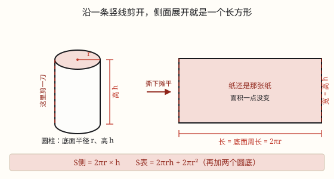

圆柱的表面积
圆柱的侧面展开是长方形，长是底面周长 2πr、宽是高 h，所以侧面积是 2πrh，表面积再加两个圆底。
| 所属主题 | 立体图形 |
|---|---|
| 所属模块 | 图形与几何 |
| 课标学段 | 第三学段（5~6年级） |
| 核心素养 | 空间观念几何直观运算能力 |
课标要求
| 图形与几何·图形的认识与测量 | 认识长方体、正方体和圆柱，了解这些图形的展开图，探索并掌握这些图形的体积和表面积的计算公式，认识圆锥并探索其体积的计算公式，能用这些公式解决简单的实际问题。 印刷第 33 页 行为动词：掌握 |
|---|---|
| 图形与几何·图形的认识与测量 | 在图形认识与测量的过程中，进一步形成量感、空间观念和几何直观。 印刷第 33 页 行为动词：感悟 |
说明
圆柱由三部分组成：上面一个圆、下面一个圆（两个底面完全相同），中间围着一圈曲面（侧面）。所以圆柱的表面积 = 侧面积 + 两个底面的面积。底面积好办，就是圆面积 π r^2；难的是那圈弯弯的侧面。
把侧面「拉直」就明白了。拿一个罐头，沿着标签纸的接缝竖着剪一刀，把标签纸撕下来摊平——你得到的是一个长方形。纸还是那张纸，只是从弯的变成了平的，面积一点没变。
这个长方形的长，原来是绕罐身整整一圈的，绕一圈的长度就是底面圆的周长 C = 2π r；长方形的宽，是标签从罐口一直贴到罐底的高度，也就是圆柱的高 h。所以侧面积 = 长 × 宽 = 2π r × h，写作 S_侧 = 2π rh。
再把两个底加上去：S_表 = 2π rh + 2π r^2，其中 2π r^2 就是上下两个圆。
实际做题时先数清楚要几个面：罐头、易拉罐有两个底；无盖水桶、笔筒只有一个底；通风管、烟囱、柱子只有侧面一圈，一个底也没有。数错面，是这一节最常见的失分点。
使用场景
购物消费：给罐头贴一圈标签纸、给易拉罐算包装用铝，算的都是侧面积；算整罐用料才要加上两个底。
工程建造：铁皮通风管、水泥圆柱、装饰柱刷漆，绝大多数只算侧面；做密封罐子才要加底。
校园生活：给圆柱形笔筒贴彩纸（无盖，只算一个底）、给教室的圆柱刷涂料，都要先算表面积再估材料。
饮食与配比：蛋糕盒外围一圈装饰纸带、奶茶杯外壁贴的标签，用的长度都是底面周长。
农业生产：圆柱形水箱、粮囤的外壁包防雨布，按侧面积备料。
注意点
展开图的长是底面周长，不是直径。侧面积是 2π rh，写成 π rh 或者用直径去平方都不对。
先数清楚要几个底面。罐头 2 个、水桶 1 个、通风管 0 个。题目问「做一个水桶需要多少铁皮」，多算一个底就错了。
半径和直径别搞反。题目给直径 8 厘米，要先 8 ÷ 2 = 4 求出半径，再代公式。
单位要先统一。半径 5 厘米、高 2 分米，先把 2 分米化成 20 厘米再算。
结果带面积单位，\textcm^2、\textdm^2、\textm^2，别写成厘米。
为什么是这样

图 1：侧面撕下来就摊成一个长方形——长是绕一圈的周长，宽是圆柱的高
算理推导
先把弯的变成直的：拿一个罐头，沿着标签纸的接缝竖着剪一刀，把纸撕下来摊平。纸还是那张纸，只是从「包在罐身上」变成了「平铺在桌上」，面积一点没多也没少。所以只要算出这张长方形纸的面积，就是侧面积。
看长方形的长从哪里来：这条长边原来是绕着罐身整整一圈的。绕一圈走的路程，就是底面圆的周长，C = 2π r（也可以写成 π d）。所以长 = 2π r，既不是半径，也不是直径。
看长方形的宽：标签纸从罐口一直贴到罐底，它的宽度就是罐子的高 h。
长方形面积 = 长 × 宽 = 2π r × h，于是 S_侧 = 2π rh。
再把两个底面加回来：上下各一个半径 r 的圆，每个 π r^2，两个就是 2π r^2。合起来就是 S_表 = 2π rh + 2π r^2。
动手实验
找一个圆柱形罐头（或薯片筒），量出底面直径 d 和高 h。用一张纸紧紧包住它的侧面，接口处用铅笔画一条线做记号，然后把纸剪开摊平。量一量：纸的长应该等于 π d（用 3.14 乘一乘对一对），宽应该等于 h。再把这张纸斜着剪开，你会得到一个平行四边形——但它的底还是那个周长、高还是那个 h，面积照样是 2π rh。可见只要「绕一圈、贴到底」这两件事没变，侧面积就不会变。
按场景的例题
例 1（场景：购物消费） 给罐头贴一圈标签
一个圆柱形罐头，底面直径 8 厘米，高 10 厘米。给它侧面贴一圈标签纸（不留重叠），标签纸的面积是多少平方厘米？
解：标签只包侧面，不用加底。S_侧 = π d h = 3.14 × 8 × 10 = 251.2。
答：251.2 平方厘米。
例 2（场景：工程建造） 做铁皮通风管
一节圆柱形铁皮通风管，底面直径 0.6 米，长 2 米。做 10 节这样的通风管至少需要多少平方米铁皮？（接口处忽略不计）
解：通风管两头是通的，只有侧面。一节：3.14 × 0.6 × 2 = 3.768 平方米；10 节：3.768 × 10 = 37.68 平方米。
答：37.68 平方米。
例 3（场景：校园生活） 做一个无盖笔筒
用硬卡纸做一个圆柱形笔筒，底面半径 4 厘米、高 12 厘米，没有盖子。至少要用多少平方厘米卡纸？
解：无盖，只有侧面加 1 个底面。侧面 2 × 3.14 × 4 × 12 = 301.44 平方厘米；底面 3.14 × 4^2 = 50.24 平方厘米；合计 301.44 + 50.24 = 351.68 平方厘米。
答：351.68 平方厘米。
例 4（场景：饮食与配比） 给蛋糕盒围一圈装饰带
一个圆柱形蛋糕盒，底面直径 20 厘米，高 15 厘米。在它的侧面围一圈宽 15 厘米的装饰纸带，正好盖满整个侧面，需要多少平方厘米纸？
解：纸带正好盖满侧面，求的就是侧面积：3.14 × 20 × 15 = 942 平方厘米。
答：942 平方厘米。
常用推论
S_侧 = 2π rh = π dh：侧面积等于底面周长乘高，因为 d = 2r。
S_表 = 2π rh + 2π r^2；无盖容器只有一个底，是 2π rh + π r^2；通风管一个底也没有，只算 2π rh。
已知侧面积和高，可反求底面周长：C = S_侧 ÷ h，再由 r = C ÷ 2π 求半径。
底面周长一定时，高扩大到原来的 n 倍，侧面积也扩大到 n 倍（侧面积与高成正比例）。
易错点
错求侧面积时算成 3.14 × 4^2 × 10 = 502.4。
为什么错底面积乘高算的是体积，单位该是立方厘米；侧面积是「包一层纸」的面积。
正确S_侧 = 2π rh = 2 × 3.14 × 4 × 10 = 251.2 平方厘米。
错底面直径 8 厘米，直接当半径代入：2 × 3.14 × 8 × 10 = 502.4。
为什么错8 是直径，公式里的 r 必须是 4。半径用成了 2 倍，结果也跟着大 2 倍。
正确r = 8 ÷ 2 = 4，2 × 3.14 × 4 × 10 = 251.2 平方厘米。
错做无盖水桶时加上了两个底，算成 2π rh + 2π r^2。
为什么错水桶上面是开口的，只有一个底面。多算一个底，买材料就买多了。
正确无盖：2π rh + π r^2；通风管连底都没有：只算 2π rh。
错半径 5 厘米、高 2 分米，直接算 2 × 3.14 × 5 × 2 = 62.8。
为什么错两个长度单位不同，混在一起算出来的数没有意义。
正确先把 2 分米化成 20 厘米：2 × 3.14 × 5 × 20 = 628 平方厘米。
直观理解
求侧面积就像给圆柱做一件「围裙」：先量腰围（绕一圈的长度就是底面周长），再量裙长（就是高），布料面积 = 腰围 × 裙长。围裙既没有底也没有盖，所以做罐头这种「有底有盖」的东西，还得另外剪两个圆片缝上。
侧面展开长方形，长是周长宽是高；两个圆底别忘了，表面积就全算到。